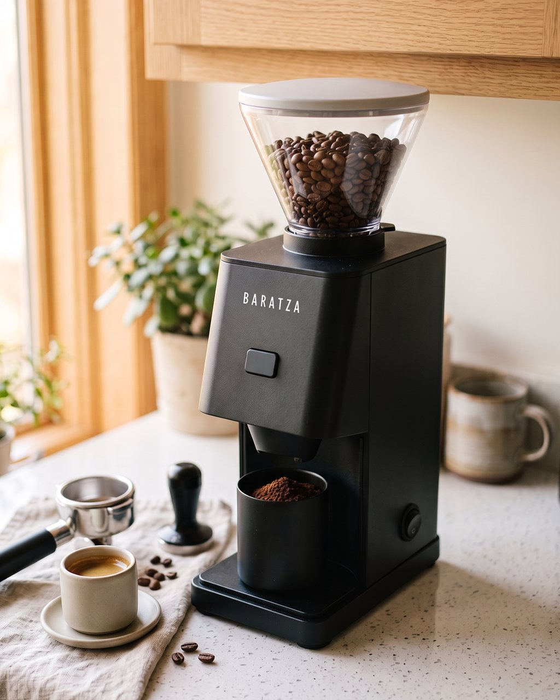
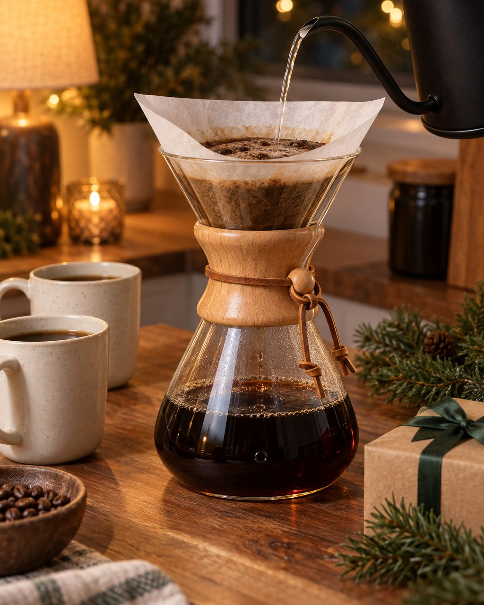

De'Longhi Magnifica Duo, one-touch hot and iced
"Bean-to-cup at one touch, hot or iced: it grinds, brews and froths milk on its own, with 20 preset drinks and two milk carafes, one for hot foam and one for cold."
Why we picked it
We chose it for the household that wants lattes and iced coffee without learning to pull a shot.
- 20 preset hot and iced recipes, per De'Longhi: espresso, drip-style coffee, iced latte, cold brew
- Built-in conical burr grinder with 13 settings; no portafilter, no tamping
- LatteCrema hot and cool: two milk carafes, one for hot microfoam and one for cold foam
- Size
- 9.5 in wide, 17.5 in deep, 14 in tall, per the listing
- Tank
- 60 oz (1.8 L) removable; hopper: 8.82 oz of beans
Profiles: 3 user profiles; 5 drink sizes, 4 intensities, 3 temperatures; 3-year warranty, per De'Longhi
Skip it if you want to tamp and dial in shots yourself, or if your counter is under 18 in deep.
Before you buy
- Depth: 17.5 in front to back, so measure from the backsplash to the counter edge before ordering.
- Two milk carafes come with it; plan fridge space for the one in use and a spot for the other.
- Fully automatic: no portafilter or accessory size to match; whole beans only, 8.82 oz hopper.
Fits: A household that wants hot and iced cafe drinks at one touch, with 18 in of counter depth.
Not for: Anyone who wants to pull and dial in shots by hand, or a counter under 18 in deep.
Full guide: read it
As an Amazon Associate, BuyRight Notes earns from qualifying purchases. We pick products from published specs and our own notes, not paid placements.
Coffee bar
 Breville Bambino, 54 mm espressoCompact espresso for a small kitchen: ready in about 3 seconds, and its 54 mm accessories are easy to find.
Breville Bambino, 54 mm espressoCompact espresso for a small kitchen: ready in about 3 seconds, and its 54 mm accessories are easy to find.
Baratza Encore ESP burr grinderAn espresso-capable burr grinder that is quiet enough for an early house and fits under a cabinet. CASABREWS espresso machine, 51 mmA first espresso machine at a starter price, with one catch: it takes 51 mm baskets, and most accessory kits do not.
CASABREWS espresso machine, 51 mmA first espresso machine at a starter price, with one catch: it takes 51 mm baskets, and most accessory kits do not.
Chemex 8-cup pour-over coffeemakerThe glass pour-over for people who like the ritual: 40 oz, borosilicate glass, wood collar, a gift that looks the part. Breville Barista Express, 54 mm with built-in grinderThe whole espresso bar in one 16-inch machine: a built-in burr grinder that doses straight into the 54 mm portafilter, a steam wand for milk, and the rest in the box.
Breville Barista Express, 54 mm with built-in grinderThe whole espresso bar in one 16-inch machine: a built-in burr grinder that doses straight into the 54 mm portafilter, a steam wand for milk, and the rest in the box.- De'Longhi Magnifica Duo, one-touch hot and icedBean-to-cup at one touch, hot or iced: it grinds, brews and froths milk on its own, with 20 preset drinks and two milk carafes, one for hot foam and one for cold.
 Nespresso Vertuo Pop+, one-touch pod coffeeOne-touch coffee or espresso from a pod, hot in 30 seconds, from a machine only 10.4 inches tall: the fast setup that still fits under a low cabinet.
Nespresso Vertuo Pop+, one-touch pod coffeeOne-touch coffee or espresso from a pod, hot in 30 seconds, from a machine only 10.4 inches tall: the fast setup that still fits under a low cabinet.
From the same guide
- Breville Bambino, 54 mm espressoCompact espresso for a small kitchen: ready in about 3 seconds, and its 54 mm accessories are easy to find.
- Baratza Encore ESP burr grinderAn espresso-capable burr grinder that is quiet enough for an early house and fits under a cabinet.
- CASABREWS espresso machine, 51 mmA first espresso machine at a starter price, with one catch: it takes 51 mm baskets, and most accessory kits do not.
- Chemex 8-cup pour-over coffeemakerThe glass pour-over for people who like the ritual: 40 oz, borosilicate glass, wood collar, a gift that looks the part.
- Breville Barista Express, 54 mm with built-in grinderThe whole espresso bar in one 16-inch machine: a built-in burr grinder that doses straight into the 54 mm portafilter, a steam wand for milk, and the rest in the box.
- Nespresso Vertuo Pop+, one-touch pod coffeeOne-touch coffee or espresso from a pod, hot in 30 seconds, from a machine only 10.4 inches tall: the fast setup that still fits under a low cabinet.